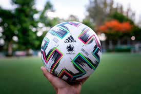
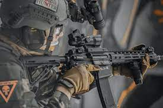
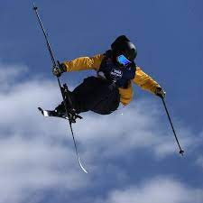

Hobbies
Voetbal: balsport waarbij twee ploegen van elf spelers moeten proberen de bal in het doel van de tegenstander te krijgen. https://rbfa.be/nl
Airsoft: Airsoft wordt meestal 'gespeeld' door mensen met militaire achtergronden of kennis. Dit is een simulatie van wat er zich zou kunnen afspelen in oorlogsgebieden. Er worden dan ook logischerwijs geen echte kogels gebruikt maar biodegradable plastiek. Wordt ook dagelijks gebruikt bij trainingen van de Defensie. https://www.instagram.com/reddelta_team/
Skiing: Zich voortbewegen op sneeuw met 2 'planken', een olympische sport. https://www.instagram.com/armadaskis/
